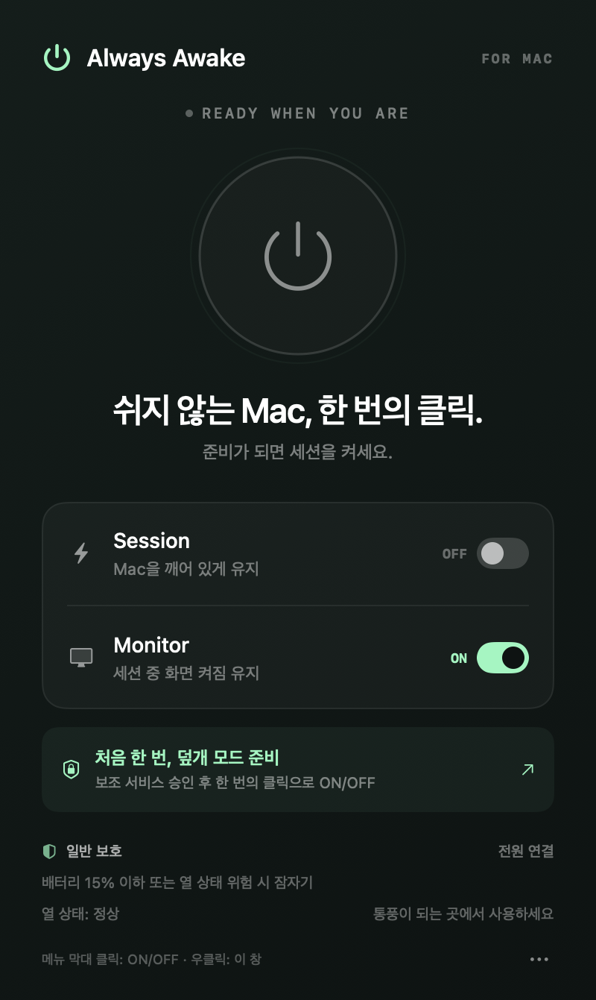

덮개만 닫았을 때
외장 화면이 없다면 더 엄격하게.
배터리 25% · 열 상태 높음A LITTLE APP. AWAKE FOR YOU.
긴 작업을 맡긴 Mac을 깨어 있게.
Session과 Monitor, 두 개의 스위치면 충분합니다.
macOS 13 이상 · Apple Silicon & Intel · 무료
Apple 서명·공증 전 테스트 버전입니다.
처음 실행할 때 macOS의 앱 실행 허용과 보조 서비스 승인이 필요합니다.

메뉴 막대에서 한 번 클릭으로 ON / OFF
GET STARTED
DMG를 열고 Always Awake를 Applications 폴더로 옮깁니다.
앱의 ‘덮개 모드 준비’를 누르고 로그인 항목 및 확장 프로그램에서 보조 서비스를 허용합니다.
메뉴 막대 클릭은 세션 전환, 우클릭은 제어창. Monitor OFF는 3초 뒤 화면만 끕니다.
AWARE, NOT JUST AWAKE
배터리와 macOS 열 상태를 살피고, 기준에 도달하면
세션을 끄고 Mac을 잠자기로 전환합니다.
외장 화면이 없다면 더 엄격하게.
배터리 25% · 열 상태 높음이동 중에도 남은 배터리를 보존.
배터리 15% · 열 상태 위험전원과 외장 화면을 연결했다면.
열 상태 위험에서 잠자기배터리 기준은 전원 연결이 없을 때 적용됩니다. 열 상태는 섭씨 온도가 아닌 macOS의 판단입니다. 통풍이 되는 곳에서 사용하세요. 가방 안 사용의 안전은 보장하지 않습니다.
현재 MVP는 Apple Developer ID 서명·공증 전입니다. 출처를 확인한 뒤 시스템 설정 → 개인정보 보호 및 보안에서 ‘확인 없이 열기’를 사용할 수 있습니다. macOS 전체 보안을 끌 필요는 없습니다. 이 단계와 앱 내부 보조 서비스 승인은 서로 다른 절차입니다.
세션이 켜져 있으면 시스템 잠자기를 막아 실행 중인 프로세스가 작업을 이어갈 수 있게 합니다. 네트워크 연결, AI 서비스 제한, 브라우저 탭의 중단 정책, 앱 자체 오류까지 제어하지는 않습니다. Monitor OFF는 화면 잠자기이며 화면 잠금은 아닙니다.
Session OFF와 정상 종료 시 원래 잠자기 동작을 복구합니다. 앱이 응답하지 않으면 보조 서비스가 복구를 시도합니다. 삭제는 제어창의 ··· → 보조 서비스 제거 후 앱을 종료하고 휴지통으로 이동하세요. 보조 서비스 자체를 강제로 제거한 경우 자동 복구가 불가능할 수 있습니다. 자세한 복구 방법은 소스코드 안내에 있습니다.
덮개 모드는 macOS의 비공개 전원 설정에 의존합니다. macOS 버전과 기기별 덮개 닫힘 테스트, 안전 중단 실기기 테스트, Apple 서명·공증은 정식 출시 전에 확인해야 합니다. 검증 목록 보기